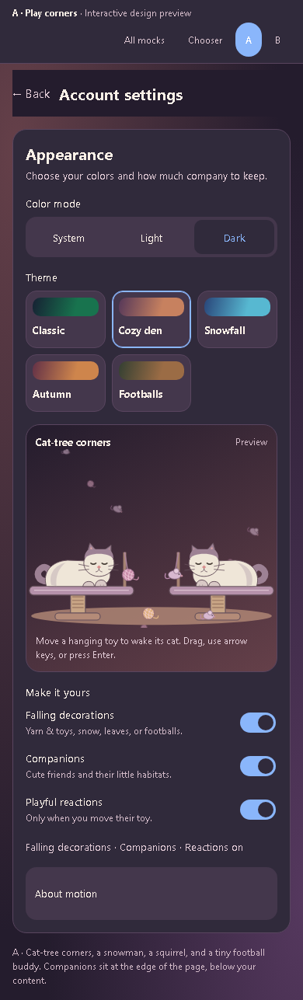
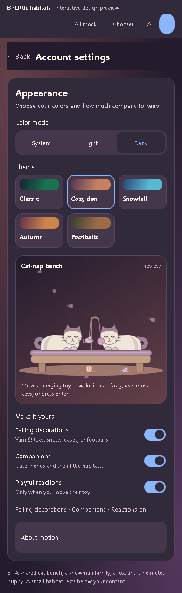

A little more company.
Both keep the approved light and dark palettes. Turn falling decorations, companions, and reactions on or off separately. The cats rest on a proper perch and react only to their hanging toy.
A · Play corners
Compact cat trees, a snowman, a squirrel on a stump, and a tiny football buddy. Recommended for a lighter touch.

B · Little habitats
A shared cat bench, a snowman family, a fox, and a helmeted puppy. More of a cozy miniature scene.

Open either preview, change the theme, and move its toy with touch, a mouse, or the arrow keys.